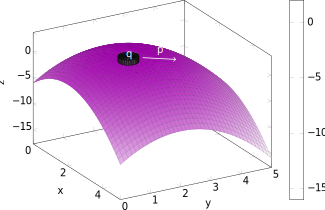
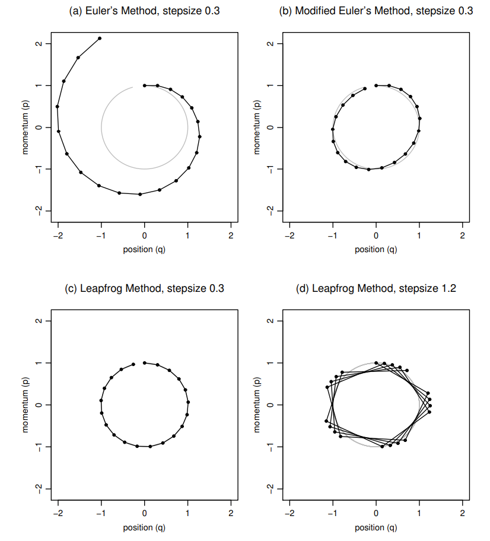
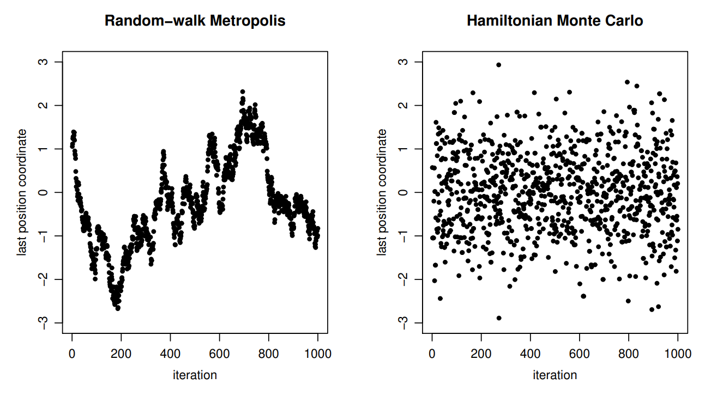

Computational Statistics Project
Department of Economics, Vienna University of Economics and Business (WU Vienna)
May 27, 2025
Intro and Recap
A Markov chain is a stochastic process \(\{X_t\}\) indexed by time \(t\geq 0\).
Markov Chain Monte Carlo (MCMC) methods make use of Markov chains to sample from a target distribution.
Markov chains are
For such Markov Chains, transition probabilities converge to a unique stationary distribution on the state space.
Metropolis-Hastings is a class of MCMC methods.
Hamiltonian Monte Carlo

Imagine a frictionless puck on a non-even surface. The state of this system is given by
In non-physical applications,
The system is described by a so-called Hamiltonian equation, \(H(q_p)\). Its partial derivatives, the equations of motion, determine how \(\boldsymbol{q}\) and \(\boldsymbol{p}\) change over time:
\[ \begin{aligned} \frac{\mathrm{d}q_i}{\mathrm{d}t}&=\frac{\partial H}{\partial p_i},\\ \frac{\mathrm{d}p_i}{\mathrm{d}t}&=-\frac{\partial H}{\partial q_i},\\ \end{aligned} \]
for \(i = 1, \dots, d\), and \(d\) being the length of the vectors \(\boldsymbol{q}\) and \(\boldsymbol{p}\).
For Hamiltonian Monte Carlo, we usually use the following kind of Hamiltonian functions:
\[ H(\boldsymbol{q},\boldsymbol{p}) = \textcolor{var(--secondary-color)}{U(\boldsymbol{q})} + \textcolor{var(--tertiary-color)}{K(\boldsymbol{p})}, \]
where the potential energy \(U(\boldsymbol{q})\) is defined as minus the log probability density of the distribution for \(\boldsymbol{q}\) that we wish to sample, plus a constant;
and the kinetic energy \(K(\boldsymbol{q})\) is given by
\[ \textcolor{var(--tertiary-color)}{K(\boldsymbol{p})} = \boldsymbol{p}'\boldsymbol{M}^{-1}\boldsymbol{p}/2, \]
where \(\boldsymbol{M}\) is a symmetric, p.s.d., and often diagonal mass matrix.
For Hamiltonian Monte Carlo, we usually use the following kind of Hamiltonian functions:
\[ H(\boldsymbol{q},\boldsymbol{p}) = \textcolor{var(--secondary-color)}{U(\boldsymbol{q})} + \textcolor{var(--tertiary-color)}{K(\boldsymbol{p})}, \]
Using this specification, the Hamiltonian functions can be written as:
\[ \begin{aligned} \frac{\mathrm{d}q_i}{\mathrm{d}t}&=[\boldsymbol{M}^{-1}\boldsymbol{p}]_i,\\ \frac{\mathrm{d}p_i}{\mathrm{d}t}&=-\frac{\partial U}{\partial q_i}.\\ \end{aligned} \]
Hamiltonian dynamics fulfill a set of properties that make them suitable for use in MCMC updating:
Reversibility and preservation of volume can be maintained even when the Hamiltonian is approximated.
For implementation, we need to discretize the Hamiltonian equations using a small step size \(\varepsilon\): time is then discrete with \(t = 0, \varepsilon, 2\varepsilon, 3\varepsilon, \dots\)
The simplest way to approximate the solution is Euler’s method:
\[ p_i(t+\varepsilon) = p_i(t) - \varepsilon \frac{\partial U}{\partial q_i}(q(t)),\qquad q_i(t+\varepsilon) = q_i(t)+\varepsilon\frac{p_i(t)}{m_i} \]
We can obtain better results by slightly modifying Euler’s method:
\[ p_i(t+\varepsilon) = p_i(t) - \varepsilon \frac{\partial U}{\partial q_i}(q(t)),\qquad q_i(t+\varepsilon) = q_i(t)+\varepsilon\frac{\textcolor{var(--primary-color)}{p_i(t+\varepsilon)}}{m_i} \]
For even better results, we can use the Leapfrog method:
\[ \begin{aligned} &\textcolor{var(--secondary-color)}{p_i(t+\varepsilon/2)} = p_i(t) - \textcolor{var(--secondary-color)}{(\varepsilon/2)} \frac{\partial U}{\partial q_i}(q(t)),\qquad\qquad q_i(t+\varepsilon) = q_i(t)+\varepsilon\frac{\textcolor{var(--secondary-color)}{p_i(t+\varepsilon/2)}}{m_i},\\ &\textcolor{var(--secondary-color)}{p_i(t+\varepsilon) = p_i(t+\varepsilon/2) - (\varepsilon/2) \frac{\partial U}{\partial q_i}(q(t+e))} \end{aligned} \]

In this example, \(H(q,p)=q^2/2+p^2+2\). The initial state was \(q=0,p=1\). We can see that the leapfrog method preserves volume exactly.
Using Hamiltonian dynamics to sample from a distribution requires translating the density to a potential energy function and introducing momentum variables. We can use the concept of a canonical distribution from statistical mechanics. Given an energy function \(E(x)\) for a state \(x\), the canonical distribution over states has density \(P(x)=(1/Z)\mathrm{exp}(-E(x)/T)\), where \(T\) is temperature and \(Z\) is a normalizing constant. Using the Hamiltonian \(H(\boldsymbol{q},\boldsymbol{p})=U(\boldsymbol{q})+K(\boldsymbol{p})\) as an energy function, we get
\[ P(\boldsymbol{q},\boldsymbol{p}) = \frac{1}{Z}\mathrm{exp}(-U(\boldsymbol{q})/T)\mathrm{exp}(-K(\boldsymbol{p})/T). \]
We can see that \(\boldsymbol{q}\) and \(\boldsymbol{p}\) are independent, and both have canonical distributions. The former will be used to represent our variables of interest, and the latter for momentum.
Each iteration has two steps:
Only in the very first step of the chain does the probability density for \((\boldsymbol{q},\boldsymbol{p})\) change from one step to the next. Also, the algorithm leaves the canonical distribution invariant.
We can use HMC to sample only from continuous distributions on \(\mathbb{R}^d\) for which the density function can be evaluated and the partial derivatives of its log can be computed.
It allows us to sample more efficiently from such distributions than simpler methods such as random-walk Metropolis.

However, in order to actually attain the benefits of HMC, we have to properly tune the step size \(\varepsilon\) and the trajectory length \(L\), i.e., the number of leapfrog steps. Tuning an HMC algorithm is also more difficult than tuning a simple Metropolis method.
The No-U-Turn-Sampler (NUTS)
This list is scrollable.